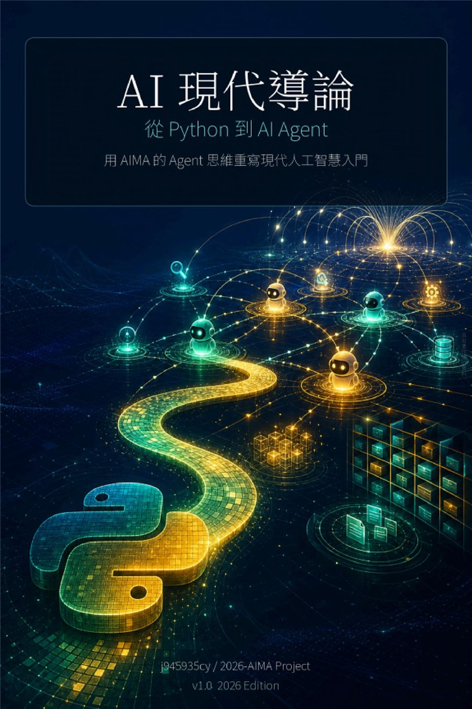

作品
AI 現代導論：從 Python 到 AI Agent
用 AIMA 的 Agent 思維重寫現代人工智慧入門

付費購買提供試閱版AI 學習 / Python / AI Agent / AIMA / 自學
AI 現代導論：從 Python 到 AI Agent
用 AIMA 的 Agent 思維重寫現代人工智慧入門
《AI 現代導論：從 Python 到 AI Agent》寫給想用現代方式重新理解人工智慧的初學者與自學者。
本書以 AIMA 的 Agent 思維為主軸，從 Python 基礎、問題表示、搜尋、知識與推理，到 AI Agent 的任務拆解與工作流程，協助讀者把抽象的 AI 觀念連到可以實作、可以檢查、可以延伸的學習路線。
適合已經聽過生成式 AI、ChatGPT 或 AI Agent，但想補上人工智慧基礎觀念的人；也適合想用 Python 進入 AI 學習，並理解 Agent 如何感知、決策、行動與改進的讀者。